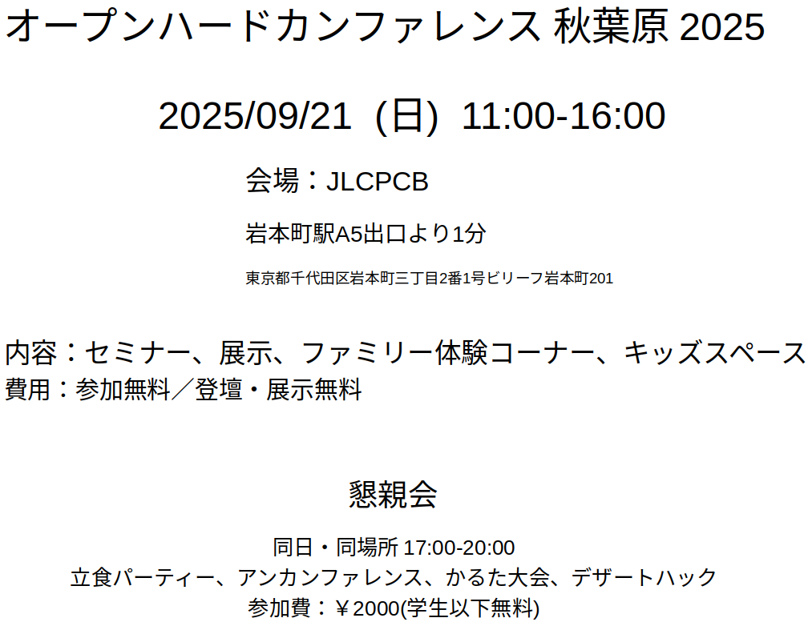

Oshwc2025akihabarastart
調整に時間がかかっていましたが、ついに日程、開催場所確定! オープンハードカンファレンス 秋葉原 2025 2025/09/21 (日) 11:00-16:00 会場：JLCPCB 岩本町駅A5出口より1分 東京都千代田区岩本町三丁目2番1号ビリーフ岩本町201 内容 セミナー、展示、ファミリー体験コーナー、キッズスペース 費用 参加無料 懇親会 同日・同場所 17:00-20:00 立食パーティー、アンカンファレンス、かるた大会、デザートハック 参加費：￥2000(学生以下無料)

画像には、展示・登壇無料と書いていますが・・・調整中です